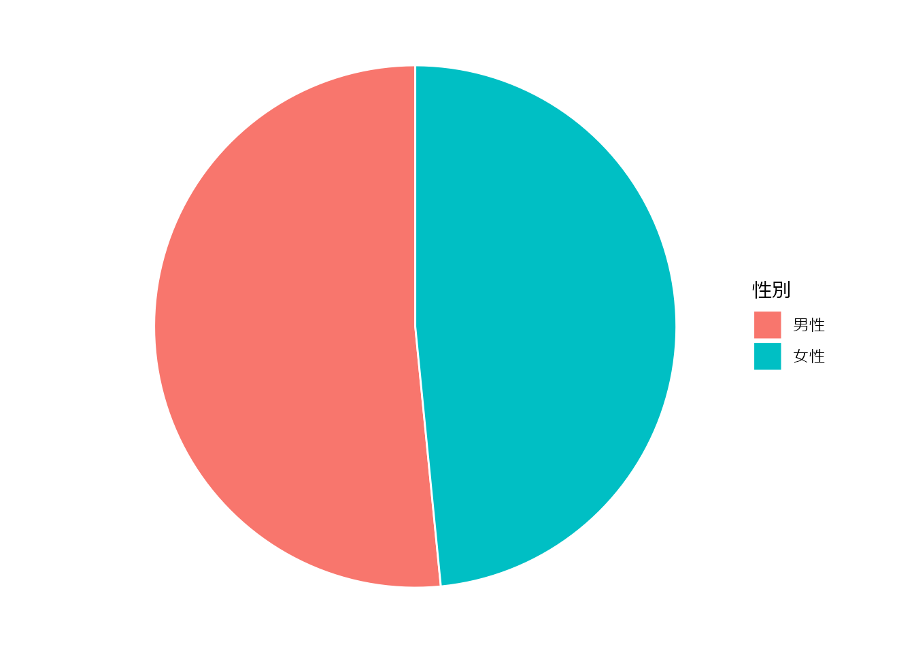
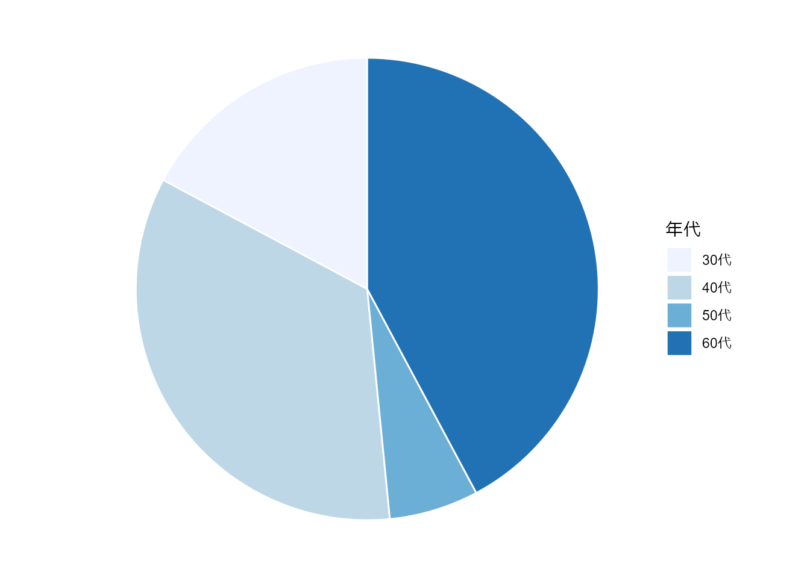
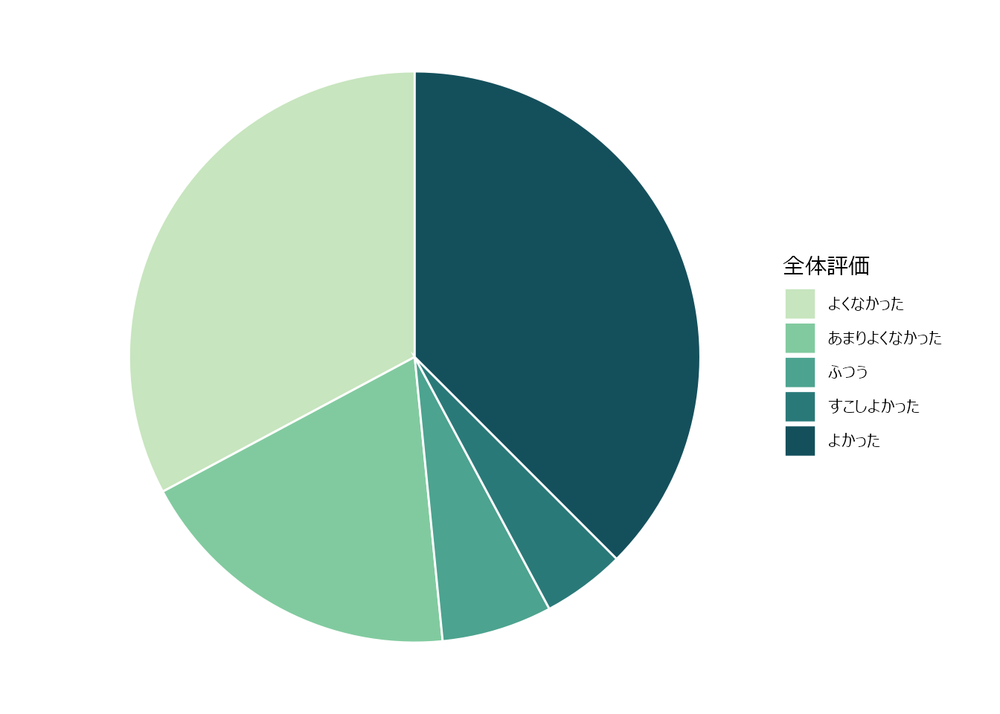

DT::datatable(dfQuest)単純集計を超えて
はじめに
アンケートの単純集計
単純集計（統計学では記述統計などと言われます）では、以下のように行います。
性別
ggplot(
dfQuest,
aes(x = "", fill = to_factor(Sex))
) +
geom_bar(width = 1, color = "white") +
coord_polar(theta = "y") +
labs(fill = var_label(dfQuest$Sex)) +
theme_void()
年齢層
ggplot(
dfQuest,
aes(x = "", fill = to_factor(Age))
) +
geom_bar(width = 1, color = "white") +
coord_polar(theta = "y") +
scale_fill_brewer(palette = "Blues") +
labs(fill = var_label(dfQuest$Age)) +
theme_void()
全体評価
ggplot(
dfQuest,
aes(x = "", fill = to_factor(Overall))
) +
geom_bar(width = 1, color = "white") +
coord_polar(theta = "y") +
scale_fill_discrete_sequential(palette = "BluGrn") +
labs(fill = var_label(dfQuest$Overall)) +
theme_void()
クロス集計
dfShow <- dfQuest
dfShow$Riyousha_ID <- NULL
dfShow$Sex <- to_factor(dfShow$Sex)
dfShow$Age <- to_factor(dfShow$Age)
dfShow$Overall <- to_factor(dfShow$Overall)
tbl_summary(
data = dfShow,
by = Sex
)| Characteristic | 男性 N = 331 |
女性 N = 311 |
|---|---|---|
| 全体評価 | ||
| よくなかった | 20 (61%) | 1 (3.2%) |
| あまりよくなかった | 9 (27%) | 3 (9.7%) |
| ふつう | 2 (6.1%) | 2 (6.5%) |
| すこしよかった | 0 (0%) | 3 (9.7%) |
| よかった | 2 (6.1%) | 22 (71%) |
| 年代 | ||
| 30代 | 7 (21%) | 4 (13%) |
| 40代 | 18 (55%) | 4 (13%) |
| 50代 | 1 (3.0%) | 3 (9.7%) |
| 60代 | 7 (21%) | 20 (65%) |
| 1 n (%) | ||
クロス集計の統計
大学で学ぶのは、カイ二乗検定と Fisher の正確性検定です。これを行うと、 p 値が計算されます。
dfShow <- dfQuest
dfShow$Riyousha_ID <- NULL
dfShow$Sex <- to_factor(dfShow$Sex)
dfShow$Age <- to_factor(dfShow$Age)
dfShow$Overall <- to_factor(dfShow$Overall)
tbl <- tbl_summary(
data = dfShow,
by = Sex
)
tbl <- add_p(tbl)
tbl| Characteristic | 男性 N = 331 |
女性 N = 311 |
p-value2 |
|---|---|---|---|
| 全体評価 | <0.001 | ||
| よくなかった | 20 (61%) | 1 (3.2%) | |
| あまりよくなかった | 9 (27%) | 3 (9.7%) | |
| ふつう | 2 (6.1%) | 2 (6.5%) | |
| すこしよかった | 0 (0%) | 3 (9.7%) | |
| よかった | 2 (6.1%) | 22 (71%) | |
| 年代 | <0.001 | ||
| 30代 | 7 (21%) | 4 (13%) | |
| 40代 | 18 (55%) | 4 (13%) | |
| 50代 | 1 (3.0%) | 3 (9.7%) | |
| 60代 | 7 (21%) | 20 (65%) | |
| 1 n (%) | |||
| 2 Fisher’s exact test | |||
ここから解釈できることは、
- 性別と全体評価に有意差があった
- 性別と年代に有意差があった
となります。
研究とは
このアンケートを、研究にアップグレードしましょう。
注：本来は、データより先に行うべきことを、今回はデータ収集後に行っています。
まず、上の例では、男女で分けています。なぜでしょうか？おそらく特に意味はないのでしょう。
仮説を決める
研究では仮説を決めてから、分析をします。
例: 全体評価 (= \(y\)) が低いのは、年代 (= \(x\)) と関係があるのではないか？
y を一つだけに決め、２値 (生/死, YES/NO) にする
- y を 全体評価 とする
- 「よかった」「すこしよかった」を「高評価」、それ以外を「低評価」
- y で分類する
dfShow <- dfQuest
dfShow$Riyousha_ID <- NULL
dfShow$OverallHigh <- ifelse(as.numeric(dfShow$Overall) >= 4, 1, 0)
dfShow$Overall <- NULL
var_label(dfShow$OverallHigh) <- "全体評価"
val_labels(dfShow$OverallHigh) <- c(
"低評価" = 0,
"高評価" = 1
)
dfShow$OverallHigh <- to_factor(dfShow$OverallHigh)
dfShow$Sex <- to_factor(dfShow$Sex)
dfShow$Age <- to_factor(dfShow$Age)
tbl <- tbl_summary(
data = dfShow,
by = OverallHigh
)
tbl <- add_p(tbl)
tbl| Characteristic | 低評価 N = 371 |
高評価 N = 271 |
p-value2 |
|---|---|---|---|
| 性別 | <0.001 | ||
| 男性 | 31 (84%) | 2 (7.4%) | |
| 女性 | 6 (16%) | 25 (93%) | |
| 年代 | <0.001 | ||
| 30代 | 7 (19%) | 4 (15%) | |
| 40代 | 20 (54%) | 2 (7.4%) | |
| 50代 | 3 (8.1%) | 1 (3.7%) | |
| 60代 | 7 (19%) | 20 (74%) | |
| 1 n (%) | |||
| 2 Pearson’s Chi-squared test; Fisher’s exact test | |||
何倍？
女性は 25/31 が高評価
男性は 2/23 が高評価
\[ リスク比 = \dfrac{ \dfrac{25}{31} }{ \dfrac{2}{33} } = 13.3... \]
女性の方が10倍以上高評価だったことになります。
\[ オッズ比 = \dfrac{ \dfrac{25}{6} }{ \dfrac{2}{31} } = 96.8... \]
ロジスティック回帰
fit <- glm(
OverallHigh ~ Sex,
family = binomial,
data = dfShow
)
library(gtsummary)
tbl_regression(
fit,
exponentiate = TRUE
)| Characteristic | OR | 95% CI | p-value |
|---|---|---|---|
| 性別 | |||
| 男性 | — | — | |
| 女性 | 64.6 | 14.5, 478 | <0.001 |
| Abbreviations: CI = Confidence Interval, OR = Odds Ratio | |||
他の要素を考慮したオッズ比
fit <- glm(
OverallHigh ~ Sex + Age,
family = binomial,
data = dfShow
)
library(gtsummary)
tbl_regression(
fit,
exponentiate = TRUE
)| Characteristic | OR | 95% CI | p-value |
|---|---|---|---|
| 性別 | |||
| 男性 | — | — | |
| 女性 | 71.3 | 12.2, 753 | <0.001 |
| 年代 | |||
| 30代 | — | — | |
| 40代 | 0.13 | 0.01, 1.80 | 0.15 |
| 50代 | 0.08 | 0.00, 1.72 | 0.13 |
| 60代 | 2.47 | 0.21, 29.8 | 0.5 |
| Abbreviations: CI = Confidence Interval, OR = Odds Ratio | |||
- 男性より女性の方が高評価 (オッズ比 71.3)
- 30代より60代の方が高評価に見えていたが、有意差はなかった
- 年代ごとに性別の差があったため！
ここで「仮説」に戻ります。
例: 全体評価 (= \(y\)) が低いのは、年代 (= \(x\)) と関係があるのではないか？
これが、違ったということになります。
統計について補足
もっと厳密にいうと
仮説: 全体評価 (= \(y\)) が低いのは、年代 (= \(x\)) と関係がある
を立てた後で、
帰無仮説: 全体評価 (= \(y\)) が低いのは、年代 (= \(x\)) と関係はない
という仮説を棄却することになりますが、こんかいは棄却できなかった、ということになります。